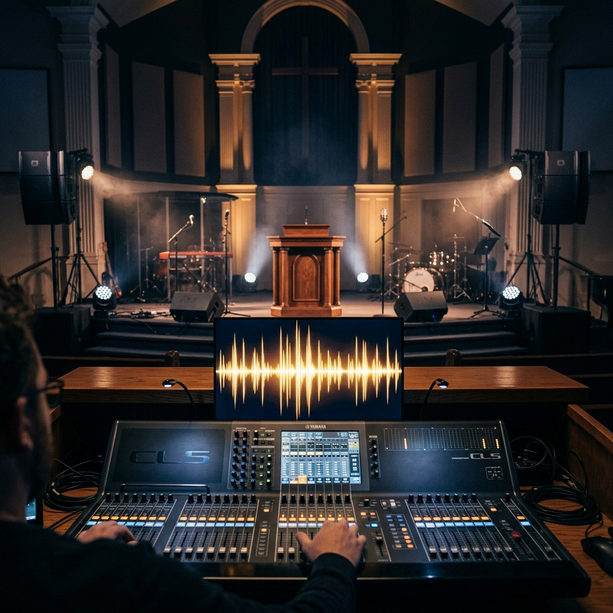

ACADEMIA DE SONIDO

Dominá el sonido para la gloria de Dios
Nuestra Academia de Sonido forma operadores técnicos capacitados para servir con excelencia en cada reunión. Aprendés desde los fundamentos de la acústica hasta la operación profesional de consolas digitales y sistemas de audio en vivo.
Nuestros Cursos
-
Operación de Consola
Manejo de consolas analógicas y digitales: canales, buses, ecualización, efectos y mezcla en vivo para servicios y eventos.
-
Microfonía
Tipos de micrófonos, técnicas de posicionamiento, ganancia, y manejo de feedback para lograr un sonido limpio y potente.
-
Sistemas de Audio
Instalación y calibración de sistemas de parlantes, subwoofers, monitores y sistemas de retorno para músicos.
-
Monitoreo y Acústica
Principios de acústica aplicada, tratamiento de espacios y gestión del monitoreo en sala para diferentes tipos de servicios.